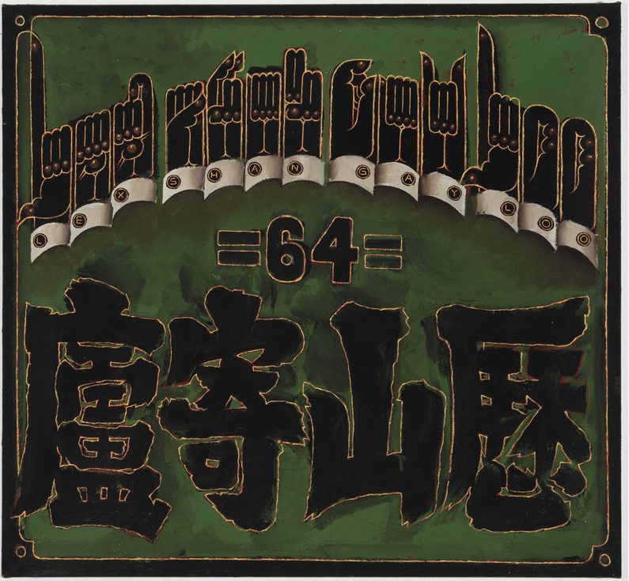

Hallucinating Hieroglyphs: The Visual Languages of Martin Wong
Language was a central component of the Chinese American painter and poet Martin Wong from his first self-published book in 1968 until his death from HIV/AIDS in 1999. Across his poetry scripts, ASL scrolls, sky-poetry, and graffiti collections, Wong’s use of language was shaped by his family, friends, and the city around him—mutating from letters into characters and mudra-like gestures.
Join us at the Chinese American Museum of Chicago for an in-depth panel discussion on Wong’s promiscuous relationship to language through hybridity and abstraction with scholar and curator Vivian Li, poet and novelist Lisa Hsiao Chen, and artist and curator Larry Lee. Then visit Wrightwood 659 on May 22, where the three speakers will discuss Wong’s hieroglyphic components in the galleries.
This FREE program is organized in collaboration with the Chinese American Museum of Chicago.